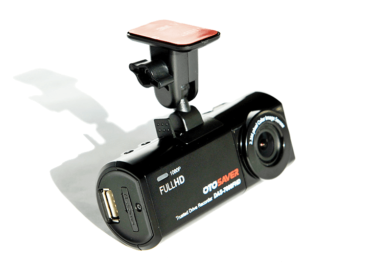

DAS-7000FHD is providing Wi-Fi Connectivity with Wi-Fi USB dongle on left side basis on the front face of the device, and if you do not want to use Wi-Fi connectivity, you can easily remove Wi-Fi USB dongle from the device.
PRD-0001ASD is providing Wi-Fi Connectivity with Wi-Fi USB dongle on left side basis on the front face of the device, and if you do not want to use Wi-Fi connectivity, you can easily remove Wi-Fi USB dongle from the device.
PRD-0002ASD is providing Wi-Fi Connectivity with Wi-Fi USB dongle on left side basis on the front face of the device, and if you do not want to use Wi-Fi connectivity, you can easily remove Wi-Fi USB dongle from the device.